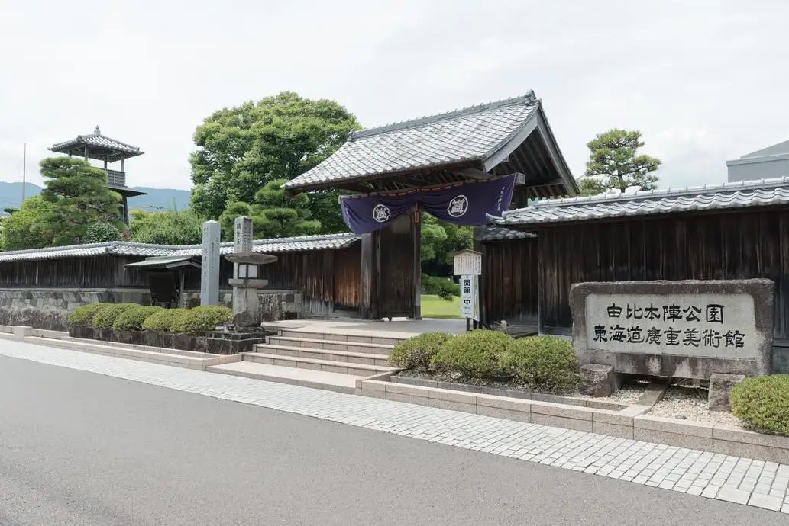
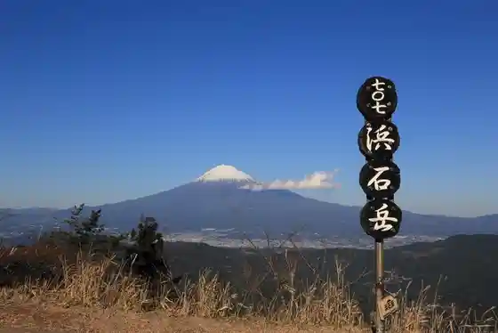
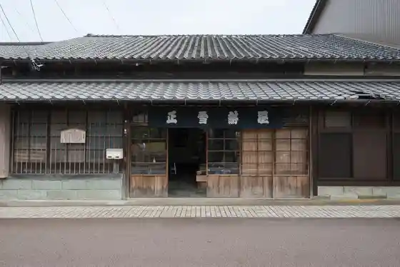
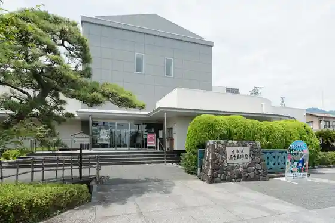

Shizuoka
Shizuoka · Shizuoka
Shizuoka
Highlighted on the Shizuoka map.

Sights
Gohan Ya Sakura
Yui Honjin Park
Hamaishi Gaku

Shosetsu Koya (Yui Shosetsu Seika)

Shizuoka Tokaido Hiroshige Art Museum

Yui Minato Gyogyo Kyodokumiai Chokubai Tokoro
Sunpu Raku City
Shizuoka Oden Machi (Aoba Alley, Aoba Oden Machi)
Yui Sakura Ebi Kan
Kurasawaya
Oiwake Hitsuji Kan
Shimizu Minato Funayado Memorial Museum (Suehiro)
Okitsu Zagyo So
Togetsu Mine Shiba Ya Tera
Shizuoka Prefectural Art Museum
Esuparusudoriimu Plaza
Shizuoka Kenchi Shin Bosai Center
Feru Ga Ru Museum
Shizuoka Science Museum Ru Ku Ru
Tokubetsu Historic Site Toroiseki
Nihondaira
Tesshu Tera
Kiyomi Tera
Ryuge Tera
Ribaueru Ikawa Ski Area
Fujisan Shimizu Minato Kuruzu
Suruga Kenko Land
Surugawan Ferii
Shimizu Funakoshi Tsutsumi Park
Jirocho Seika
Dai Irori Fudo Mikoto
Kuju Yama Hora Yoshi In
Kyu Igarashi Shikaiin
Shizuoka Ritsu Nihondaira Zoo
Minami Arupusuyunesukoeko Park Ikawa Bijita Center
Miho Uchihama Beach
Miho Masaki Beach
Mochimune Kaigan Beach
Shizuoka Ken Maizo Bunkazai Center
Fuji no Kuni Chikyukankyo Shi Museum
Ribateii Resort Kuno Yama
Fugetsu Ro
Nihondaira Yume Terasu
Tororo Shiru no (Ganso Chojiya)
Sunpu no Workshop Takumi Yado
Sauna Shikiji
Rinzai Tera
Satta Toge
Kuno Santo Terunomiya
Abekawa Mochi Yamadaichi Toro (Mochi no Ie)
Shimizu Sakana Market Kashi no City
Sunpujo Park
Miho Matsubara (Hagoromo no Matsu)
Nihondaira Ropuei
Shizuoka Asama Shrine
Kuchi Sakamoto Onsen Bath
Shimizu Nishisato Onsen (Yamasemi Baths)
Yu no Shima Onsen Bath